推荐质量与消费集中度：来自 Netflix 的实验证据
英文标题：Recommendation Quality and the Concentration of Consumption: Experimental Evidence from Netflix
作者：Guy Aridor, Winston Chou, Nathan Kallus, Antoine Scheid, Allen Tran, Kevin Zielnicki
机构：Netflix、Northwestern Kellogg；合作机构包括 Cornell University 与 Cornell Tech
时间：2026-08-21（arXiv v1）
领域：econ.GN, cs.IR；大规模在线实验、popularity bias、消费集中度
论文入口：arXiv:2608.21274
代码/数据：未核验到独立公开代码或可公开复现的实验数据；论文依赖 Netflix 内部生产系统与会员行为日志。
1. 背景和问题
随着推荐系统从协同过滤、矩阵分解发展到深度、序列和基础模型，技术质量的持续提升究竟会把消费压向少数超级热门，还是把消费分散到更多中尾部和长尾内容，仍没有被当代大规模生产系统的长期实验直接识别。
这一问题之所以长期存在争议，是因为“推荐”同时含有几种相反的力量。一方面，降低搜索成本和突出全局热度可以放大 superstar，互动数据又会形成 popularity bias：热门 title 更容易获得数据，也更容易被系统学好。另一方面，个性化能找到公共热度之外的匹配，因此可以分散需求。过去常见的问法是“有推荐”对“无推荐”，本文改问为：在一个已经很成熟的推荐平台里，推荐质量的边际进步把受益边界推到哪一段 title 分布。
这也解释了为什么离线 accuracy 或单次线上 A/B 的总 engagement 不足以回答论文的问题。两个推荐器即使带来相同的播放增量，也可能有完全不同的分配后果：一个把曝光集中到更少头部 title，另一个通过更精准的异质偏好信号找到更多中等流行度 title。同理，“coverage 变大”也不等于价值提升：如果被增加的 title 不合适，用户可以绕过推荐、搜索头部内容，或直接不消费。因而本文必须同时建立四段证据链：推荐曝光的分布是否旋转，真实 plays 是否跟随，总体 engagement 是否增加，以及新增播放的 match quality 如何受选择影响。
与传统“长尾理论”相比，论文有意把 middle-tail 从广义尾部中单独拆出。这一步很重要：long-tail 的核心障碍可能是数据过稀，即使模型质量提高也尚未跨过可靠匹配阈值；middle-tail 却已有足够交互，只是在旧技术下还被 superstar 的流行度优势压制。如果把两者合成“非头部”，就会错过了解技术进步边际收益形状的关键信息。
还要区分 aggregate concentration 和 individual diversity。假设每个用户仍只看极少数 title，但不同用户被匹配到的 title 更不一样，全平台的 HHI 会下降，而单个用户的列表并不一定更发散。反过来，列表曝光更多 title 也不保证跨用户的总体消费更分散，因为追加的 title 可能在所有人列表中都是同一批热门内容。本文主要识别前者：推荐和播放在 title 层面的跨用户集中度，并用 distinct titles played 作为用户消费广度的补充，而不是报告一个统一的“coverage 提升”数字。
因此，读取后续图表时必须始终问清“分子、分母和聚合层级”，不能将 recommendation share、play share、HHI 和 distinct titles 当成同一个多样性概念的不同写法。
论文将 title 分为三段：superstar 是播放分布顶部 5%，long-tail 是底部 50%，middle-tail 是中间 45%。这不是按总播放量累计份额切分，而是按 title 的播放百分位切分；因此“顶部 5%”是 title 数量上的顶部，不能直接解读为占总播放 5%。同样，“long-tail 效果接近零”只说在这个广义底部桶的聚合份额上变化很小，不代表所有 niche title 都没有局部获益。
本文的核心价值是识别设计，而不是又一次离线排序评测。作者利用 8,559,252 名订阅者的 60 天 long-term cumulative holdback：对照组一直使用实验开始前的冻结系统，处理组则使用生产系统，并在实验期间继续吸收新的算法发布。所以，它回答的是“冻结基线对持续演进的生产组合”的长期差异，不是某个单一模型替换带来的差异。
2. 方法
2.1 三类内容、用户选择与流行度默认
概念模型用 long-tail (L)、middle-tail (M) 和 superstar (S) 三个代表性 title 压缩内容空间，并假设用户最多消费一个 title。这个简化不是复刻串流媒体的多次播放，而是要分开公共流行度与每个人的横向偏好。用户 (i) 对 title (j) 的真实效用是
推荐不改变用户对 title 的真实效用，而是通过降低搜索和信息摩擦，给被推荐 title 一个决策加成。这样可以区分“用户真的更喜欢”与“用户因看到而更容易播放”：
符号解释：(μ_j) 是 title 的纵向流行度，(θ_{ij}) 是用户-title 特定的横向偏好，(R_i) 是推荐集，(b) 是推荐对决策效用的缩约式加成。于是，用户即使真的更喜欢 (M)，当旧系统默认推 (S) 时也可能播放 (S) 或选择不播放。
推荐技术由质量索引 (δ) 表示。当 (j) 确实是用户最优 title 时，系统以 (q_j(δ)) 正确识别它，否则默认给 (S)。作者假设 long-tail 与 middle-tail 的识别率都不会随技术进步变差，同时在当前技术区间中，middle-tail 的加权边际改善更大。关键假设是
这里 (p_j) 是以 (j) 为最优 title 的用户比例。技术进步时，middle-tail 既没有像 superstar 那样已经被充分识别，又不会像 long-tail 那样因交互过稀而仍远离可识别阈值，所以加权正确匹配的边际改善最大。模型因此预测：推荐份额对 (M) 增幅最大，播放份额从 (S) 转向 (M/L)，总 engagement 与推荐来源播放份额上升。
平均匹配质量则不确定：原本会播放 (S) 的用户改播自己更喜欢的 (M)，是 inframarginal switching 收益；原本不播放的用户被推荐带入播放，却可能播一个只略高于外部选项的边际 title，是 extensive-margin composition。附录式 (18) 的核心就是比较这两项，因此论文没有在理论上预设平均质量必然上升。
2.2 长期 cumulative holdback 与组合 treatment
实验发生在 2025 年 2 月至 4 月，覆盖 8,559,252 名 Netflix 订阅者和 60 天。control 组冻结在实验开始前的推荐系统，在整个期间不接收新发布；treatment 组对应大多数会员所见的生产系统，会随新创新上线而继续变化。其中包含 12 项主要改动：针对特定首页行的专用 ranker、特征工程、联合建模等架构调整，以及不同预测目标的权重变化。多数在早期上线，少量接近实验尾部。
该设计的处理是“持续演进的生产组合”，不是只替换一个模型；因而 ATE 可以解读为这两个长期系统状态的差，但不能分解为某个 ranker、特征或目标权重的因果效果。这也意味着 treatment intensity 随时间累积，它更接近对“两个月工程进步”的政策评估，而不是对稳定单一 treatment dose 的评估。
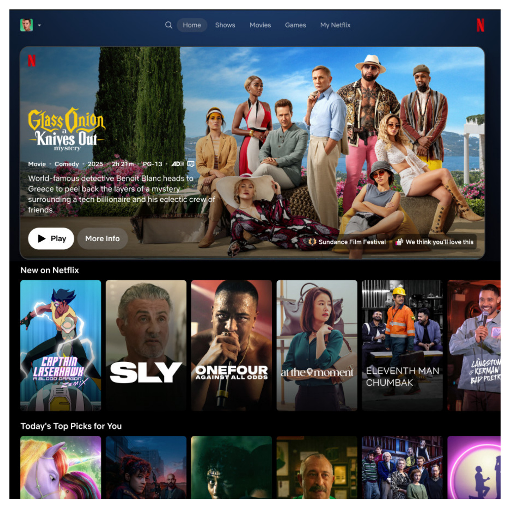
这张原图把 cumulative holdback 的系统差异落到真实产品表面：同一首页由多行个性化推荐组成，control 在 60 天里冻结实验开始前的整套生成与排序逻辑，treatment 则可能随 12 项发布改变特定行 ranker、特征、联合建模架构或目标权重。图的用途不是展示产品美术，而是帮助区分三个口径：首页行里的 title 是推荐曝光，点击行内 title 才可能成为 recommendation-sourced play，搜索或继续观看则会产生其他来源的 play。这种分解使作者能检查“首页曝光变了”是否传导到播放行为，而不是把所有播放都当作排序命中。图中虽然可见多行结构，却不能识别哪一行、哪个 ranker 或哪次发布产生了总体效果；每行还有各自候选与排序逻辑，因此整个首页是服务链路和动态组合 treatment 的结果，不能对应为一次单模型 inference。对继续观看的排除同样重要，否则剧集多集播放会把既有偏好误计为新推荐成功。
2.3 流行度分桶、份额回归与集中度
由于 title 不断上下线，作者不直接使用实验前份额，而是用 treatment 和 control 合并后的实验期播放分布给 title 排百分位。对用户 (i)、桶 (k) 和 outcome (o)，先把该桶计数换成用户内份额 (s^o_{ik})，然后分桶估计
符号解释：(T_i) 是 treatment 指示，(α^o_k) 是 control 的平均份额，(β^o_k) 是该 outcome 在该桶的平均处理效应。因为一个用户的三桶份额加总为 1，这些系数主要读为桶间重分配，不是总曝光或总播放量。
跨 title 的 coverage 在本文中主要通过分布份额和集中度反映。仅看三桶系数仍不知道份额是否从几个 superstar 分到许多 middle-tail title，所以作者另外在 title 层面计算推荐和播放的 HHI，定义为
这里 (s_j) 是 title (j) 在所有推荐或播放中的份额；HHI 下降意味着份额分布到更多 title，但不等于 catalog 中“至少被曝光一次”的独立 title 数。engagement、MRR、播放来源和 match quality 则用用户级回归 (Y_i=α+βT_i+ε_i) 估计，使用 robust standard errors；HHI 的标准误用 delete-one jackknife。
2.4 贝叶斯推荐微观基础
附录把 popularity default 写成一个贝叶斯推荐器。平台知道 title 的公共流行度，却只能观察用户横向偏好的噪声信号。信号噪声同时受技术与数据影响：技术质量对全体 title 生效，交互数据量则决定每个 title 从改进中得到的有效精度：
在高斯先验下，用于排序的后验均值是公共流行度与经收缩的个人信号之和。收缩权重不是人工设定的 popularity penalty，而是由后验精度比自然得到：
符号解释：(λ_j) 表示 title 数据量，(δ) 表示通用技术质量，(w(α_j)) 是对噪声横向信号的收缩权重。当 (δ) 近似 0 时，所有 (w) 近似 0，评分只剩 (μ_j)，系统就对每个人默认选 (S)。当技术改善，(M) 比 (L) 更快跨过“超过 (S)”的评分阈值。这个模型只是机制微观基础，不是 Netflix 生产模型的架构披露，实证也没有估计 (δ)、(λ) 或后验权重。
3. 实验结果
3.1 实验环境、样本与处理定义
Netflix 用户支付订阅费后可以无单次费用播放 title，因此论文把 play 作为 consumption，把总播放量作为 engagement。首页对每个用户个性化；用户可直接从首页 recommendations 播放，也可继续已开始内容或手工搜索。后续“来自推荐的播放”特别限制为 session 的第一次播放，以避免自动连播或剧集继续观看污染来源归因。
3.2 推荐从 superstar 旋转到 middle-tail
三桶回归显示，treatment 下 superstar 推荐份额下降，middle-tail 增加，long-tail 变化很小。更细的 ventile 图不是一条单调上升的“越尾部越受益”，而是中高分位逐步增加、进入最高的 superstar 区间后转负，符合 hump-shaped redistribution。
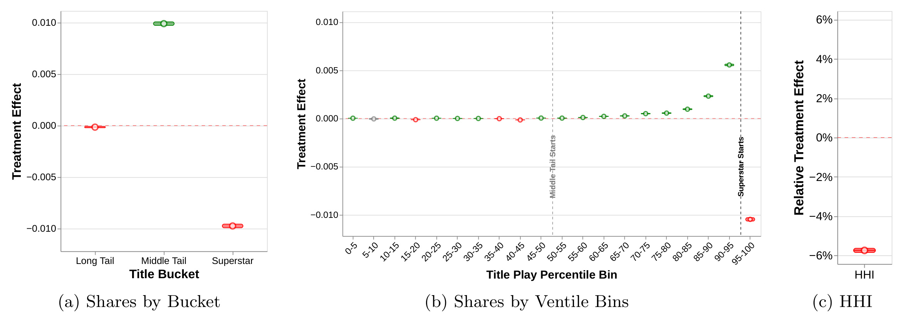
左面板将最容易被误读的结论画得很清楚：增量不是大规模进入 long-tail，而是主要落在 middle-tail；superstar 的份额减少量与中尾部增加量大致对应。中间面板说明这不是 50%/95% 两个人为阈值创造的跳变：接近 middle-tail 上沿时收益更大，到顶部 title 后迅速转为损失。右面板显示推荐 HHI 相对下降 5.7%，意味着曝光从少数大 title 分散到更多 title。这是 title-level 集中度结论，不能替换用户级多样性指标，也不能推出每个人都看到更长的个人列表。图中误差条是 95% 置信区间，HHI 又用 delete-one jackknife 计算标准误，不应将点估计的小数差异当成精确排名。
3.3 播放分布与消费集中度
曝光分散不保证播放分散：如果新推的 middle-tail 对用户不合适，用户可以搜索 superstar 或不播放。Figure 3 因此是关键传导检查：播放份额也从 superstar 转向 middle-tail，long-tail 依然在定量上接近零变化。
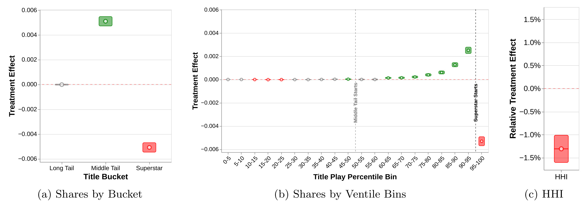
这张图与 Figure 2 的结构几乎一一对应，但量级更小：推荐曝光的重分配只有一部分传导到真实播放，符合用户还有搜索、继续观看与外部选项的现实。左面板仍是 middle-tail 显著增加、superstar 显著减少，中间面板显示越接近最高分位，负向效应越强。右面板的 play HHI 下降 1.2%，比 recommendation HHI 的 5.7% 小，却仍经济上和统计上有意义。这个差距是行为传导不完全的证据，不应把 5.7% 直接当作消费多样性的改善幅度。附录用 control-only 排序重复估计后形状不变，说明旋转并非主要由 pooled bucket 的排名变动造成。long-tail 点估计接近零还应读成桶级平均，不排除内部 title 之间有方向相反的变化。
3.4 总体使用深度与推荐依赖
份额旋转可能只是重排，因此作者进一步估计总量。view hours 上升 0.37%，overall plays 上升 0.62%，days with at least one play 上升 0.21%，distinct titles played 上升 1.2%，均为相对 control mean 的变化。
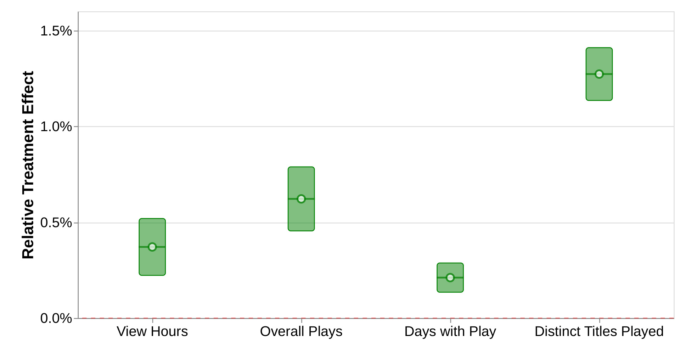
四项结果的结构比单看播放量更有信息。distinct titles 增幅最大，说明更好匹配不只是让同一 title 多播几集；overall plays 增幅高于 view hours，也与更多 title 进入播放集合一致。days with play 只增加 0.21%，却能说明一部分原本选择外部选项的用户在 treatment 下进入了播放，对应模型的 extensive-margin entry。作者将 0.21% 与结构模型估计的“回退到十年前矩阵分解会使 days with play 下降 4%”比较，但这两个数字来自不同识别设计，只宜用于量级背景。
推荐依赖指标也同时改善：plays per visit +0.47%，来自 recommendations 的 first-in-session play 份额 +0.5%，MRR +0.1%。这组结果把 engagement 增量与推荐链路联系起来。
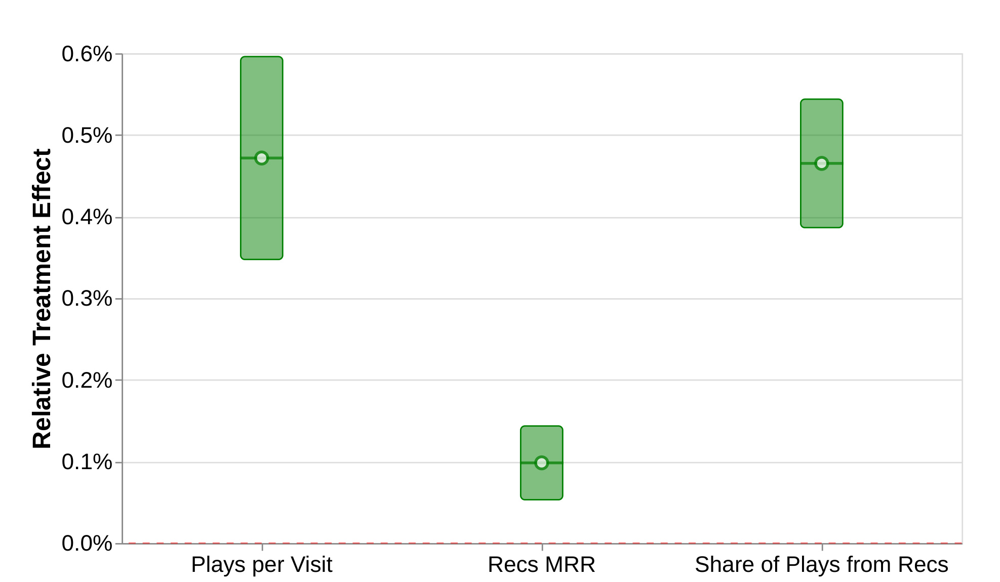
三个指标测量的层面不同：plays per visit 是会话转化，recommendation-sourced share 是导航来源，MRR 是被播放 title 在首页行中的倒数排名。三者同时为正，比仅凭总 play 更支持“推荐更能将访问转成合适内容”。但 MRR +0.1% 并不表示离线 ranking metric 改善 0.1%；它是真实播放 title 的首页行位置指标，同时受用户选择和曝光位置影响。更重要的是，这仍是整个组合 treatment 的结果，不能反推某项模型架构改动改善了 MRR。三项相对增幅都小于 1%，大样本使它们精确，但不应把统计显著等同于单个用户可明显感知的幅度。这种小而稳定的效果更适合用平台级累积价值解读。
3.5 匹配质量：总量增加与平均质量的选择问题
论文用首次观看日是否达到 $\min\{X,\operatorname{runtime}\}$ 分钟以及正向 thumbs 作为 match quality 代理。treatment 使每个用户达到 15/30/45 分钟阈值的 title 总数均增加约 1.3%，正向 thumbs 的 title 总数增加 0.57%。但分母改为所有 plays 后，30 分钟完成份额和正向 thumbs 份额的点估计显著为负，15/45 分钟完成份额和 positive ratio 等则接近零或不显著。
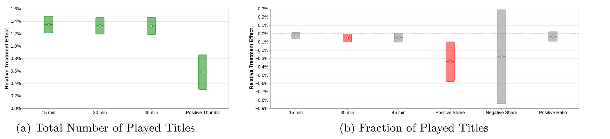
左面板回答“用户是否找到了更多达标 title”，答案是肯定的；右面板回答“每一个已播放 title 的平均达标率是否更高”，答案是混合的。两者不矛盾：treatment 提高总 plays，新增的后序播放本来就更靠近用户的质量阈值，会扩大分母并降低平均值。因此左面板支持“更多满意内容被消费”，却不足以支持“每次播放的平均匹配必然更好”。thumb 结果还只在观看足以触发评价 prompt 的子样本中定义，与全部 plays 的观看时长口径不完全相同。右面板出现负值不能单独证明推荐质量退化，它首先提醒评估者分母已被 treatment 改变。
为看 composition，作者按用户第 (k) 个 title 排序，比较 control 和 treatment 的未条件质量曲线。
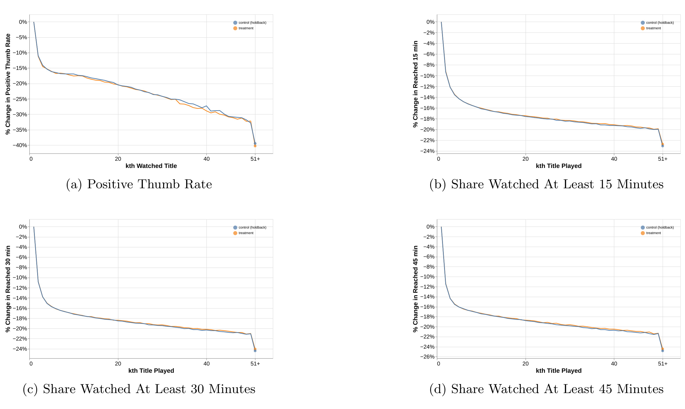
四个面板都显示，随着 (k) 增大，正向 thumbs 率和达到 15/30/45 分钟的比例系统性下降；到 51+ 的聚合点还有明显跳降。treatment 提高 plays，因而更多用户会进入这些本来就质量较低的后序位置；直接比较所有已播放 title 的平均值，就会将“谁进入了分母”与“同一潜在播放的质量改变”混在一起。图中两组曲线大部分重合，不支持简单声称 treatment 将后序 title 质量大幅提高，它的主要作用是暴露 selection 问题。这些曲线是水平变化的描述，本身不是随机化后的条件 ATE。
论文进一步使用 Lee bounds，在“treatment 不会减少用户的消费”的单调性下，通过裁剪较多播放一组的结果构造 identified set。
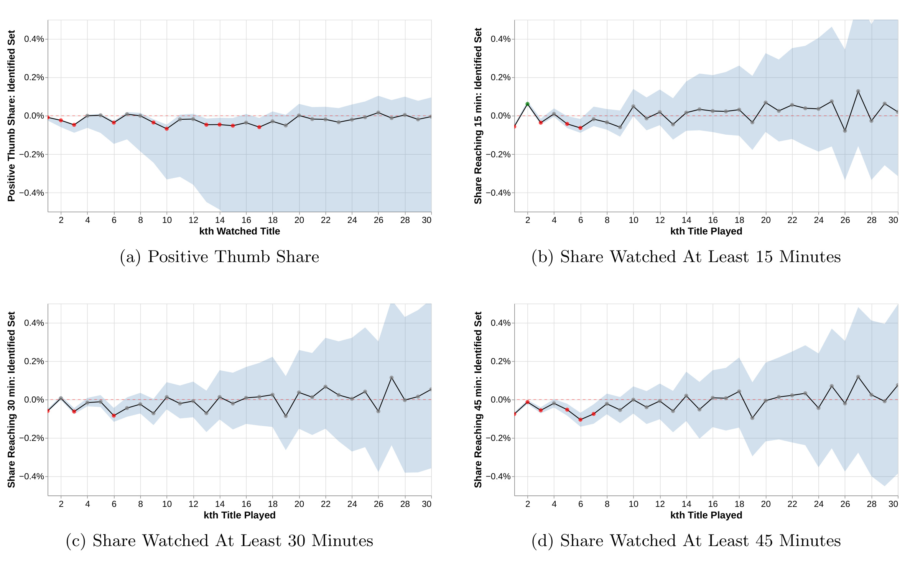
四个 identified set 在多数 (k) 上跨过 0，且随 (k) 增大而明显变宽，说明数据不能稳定签号新增播放的匹配质量。这不是“证明质量完全不变”；它表示在可观察选择与单调性假设下，无法把 inframarginal 改善与 extensive-margin 边际内容的组成效应分开到足以给出确定方向。越后的 (k) 可用样本更少、裁剪空间更大，所以置信带变宽也是识别力下降，不应被当作异质性反转。此处的最保守结论是“符号未识别”，而非“等于零”；系统可能对已有播放和新增播放产生不同质量效果。单调性假设虽与 days with play 上升的总体结果一致，却仍是个体潜在结果层面的不可检验限制，读者应把 bounds 作为条件结论。
3.6 时间稳健性、内容异质性与口径稳定性
首先是分桶口径。主分析用两组合并播放分布，可能担心 treatment 自己改变了 title 排名。作者分别在 treatment 和 control 内给 title 分桶，构建混淆矩阵。
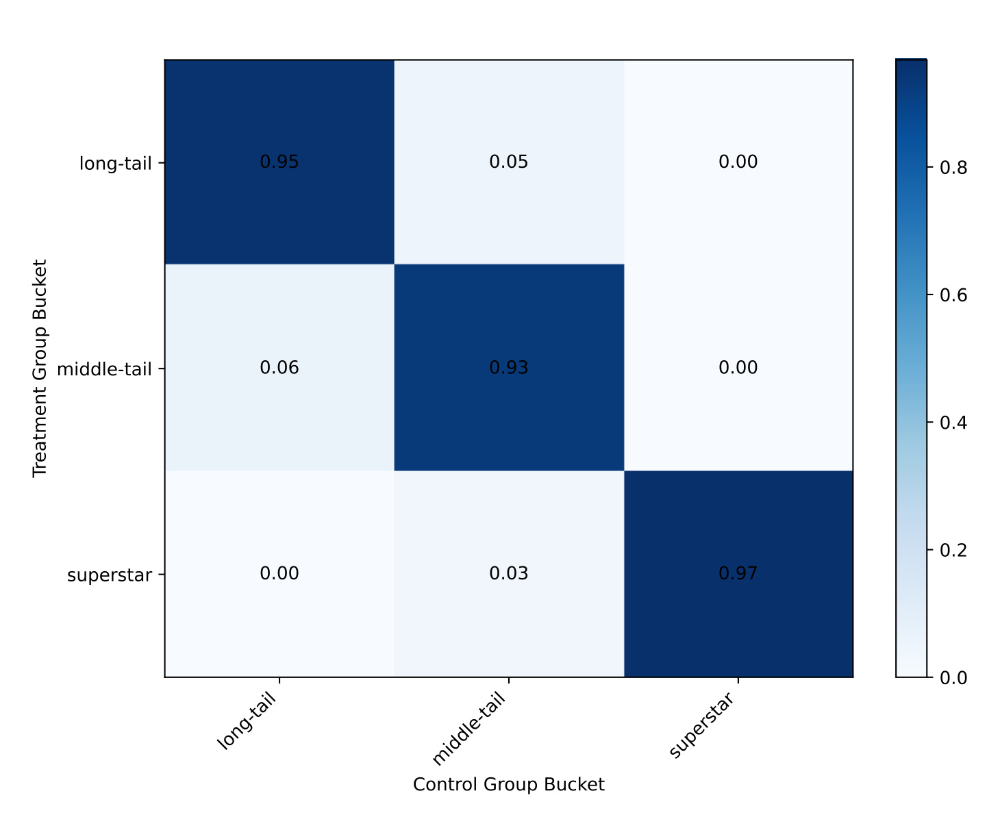
对角线一致率为 long-tail 0.95、middle-tail 0.93、superstar 0.97；最主要的跨桶是 long-tail 与 middle-tail 之间的 5%-6%，middle-tail 与 superstar 之间只有约 3% 的单向差异，其余近似 0。这说明 60 天 treatment 虽然改变播放，却没有将大量 title 的三类身份完全重写。附录再用 control-only ordering 重估 Figure 2 和 Figure 3，方向保持一致。这组检查能降低分桶内生性担忧，但不能消除联合分布阈值附近的局部分类误差。
其次是时间稳健性。如果效果只在新算法上线当周出现后迅速衰减，60 天平均值就不足以支持长期进步。
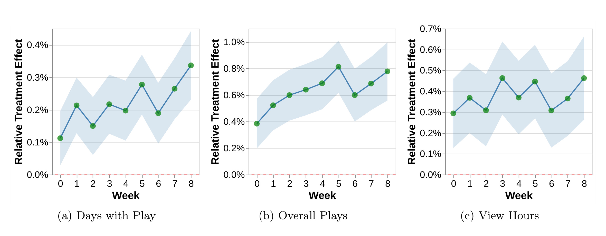
三个面板中，days with play、overall plays 和 view hours 的点估计都没有随周次系统性回落到 0，大体稳定或上升。这排除了一个简单的短期新鲜感解释，也与“生产 treatment 逐步吸收发布”的设计相符。但后期点估计更高不能自动解读为用户学习或网络效应：由于 treatment 期间又有少量新发布，时间趋势同时混合了算法累积、时间环境和用户反应，本实验不分解三者。因而这张图支持“效果持续”，但不支持“效果随暴露时长自然累积”的机制断言。逐周置信带仍较宽，局部起伏也不宜用于给单个发布排序。
最后是内容类型异质性。作者将 distinct titles 按电影与剧集拆开，两类均为正，剧集增幅明显更大。
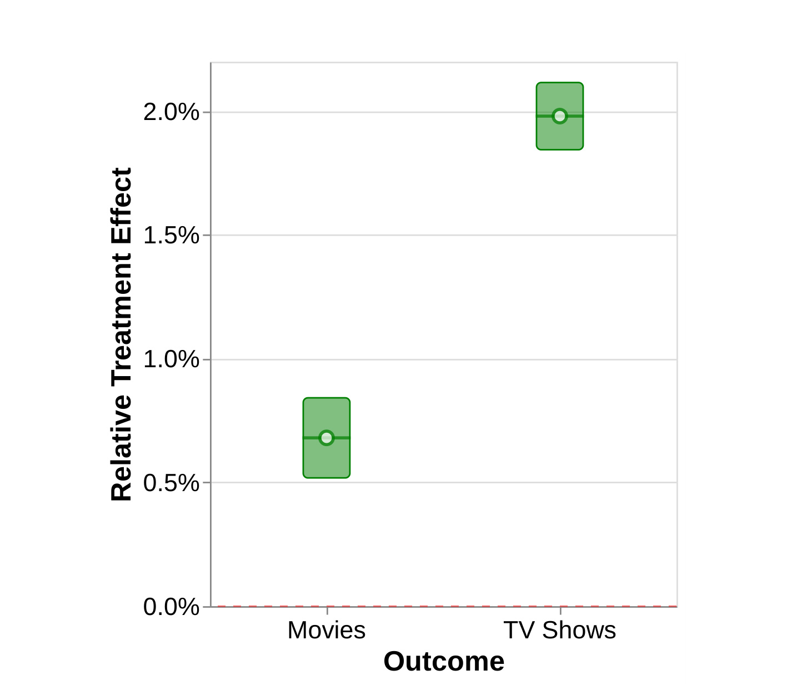
图中电影的增幅约在 0.7% 左右，剧集接近 2%，两者置信区间都高于 0。这与 TV show 的计数结构有关：overall plays 中每集可单独计数，而distinct title 中整部剧仍是一个 title，所以两个指标的分解不能混用。该异质性支持中尾部改善不是只由单一电影类型驱动，但它仍然很粗：论文没有披露地区、用户活跃度、新/老会员或类型题材的异质性，因而无法判断中尾部收益是否集中在特定人群或内容品类。此外，图中没有把电影和剧集再按流行度桶交叉，所以不能据此断定剧集增量就一定来自 middle-tail。剧集可能在推荐行、season 结构和用户连续观看上都与电影不同，这些机制需要额外实验才能区分。
这些机制需要额外实验才能区分，不能只凭这一个分解图定论。
4. 总结
4.1 我的判断
这篇论文最可贵的不是证明“推荐会分散”，而是把结论改写为一个随技术成熟度移动的 frontier。当系统很弱，它依赖公共流行度并默认推 superstar；当它可以从有限交互中提取更好的偏好信号，当前最大收益落在有一定受众但旧系统还匹配不好的 middle-tail；极度稀疏的 long-tail 仍未跨过可靠识别阈值。这比“头部对长尾”的二元争论更符合生产推荐的数据约束。
对工程而言，要同时监控几组 estimand：桶级曝光/播放份额用于看旋转，title-level HHI 用于看总体集中度，distinct titles 用于看用户的实际消费广度，engagement 与 recommendation-source 指标用于检查分散是否有用。平均 match quality 必须额外处理 treatment-induced consumption 的选择，否则分母变化会伪装成质量变化。
4.2 局限与后续跟进
至少有五个边界需要保留。第一，treatment 是 12 项主要创新累积而成的动态组合，不能归因到单一模型。第二，结论来自 Netflix 订阅视频，平台无单次价格、内容很长，不能直接外推到短视频、电商或广告。第三，superstar/middle/long-tail 的 5%/45%/50% 阈值是特定定义，且基于实验期联合分布。第四，质量依赖观看时长和 thumbs 代理，Lee bounds 又依赖消费单调性，并没有点识别用户福利。第五，论文未公开完整分组样本量、基准水平、数据或复现代码，外部读者难以独立复核绝对规模与更细异质性。
后续最值得做的三项工作是：其一，用析因或分期实验拆开 ranker、feature、architecture 与 target-weight 的边际贡献，回答哪类技术最能扩张 middle-tail frontier；其二，继续跟踪更长周期的用户保留、搜索、内容生产与供给投资，验证中尾部曝光是否转化为可持续供给激励；其三，在不同平台、不同 catalog 密度和不同用户冷启动程度下重复 long-term holdback，直接估计“当 middle-tail 饱和后，long-tail 是否开始获益”这个动态 frontier 预测。